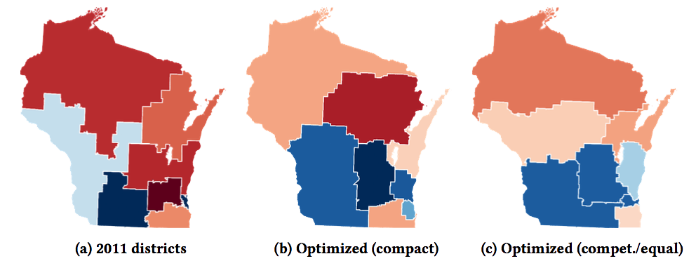
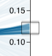
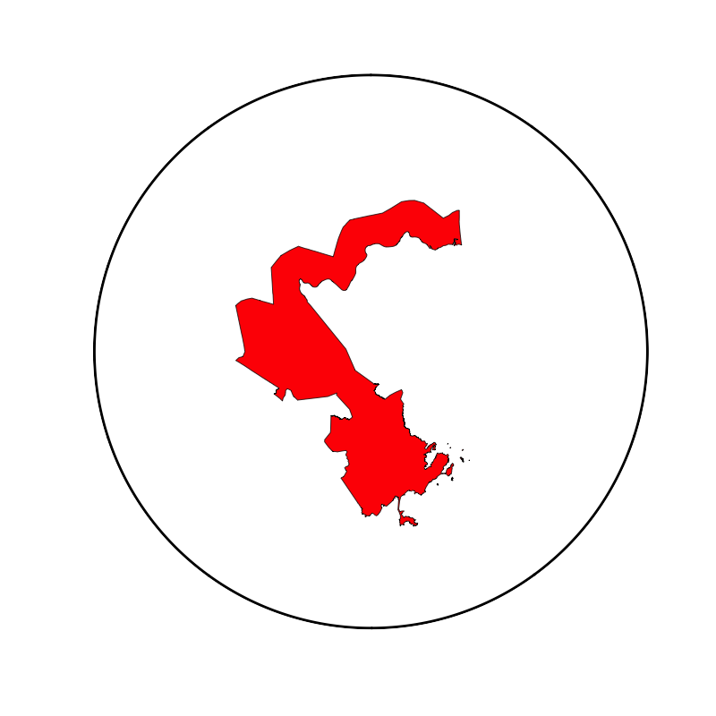
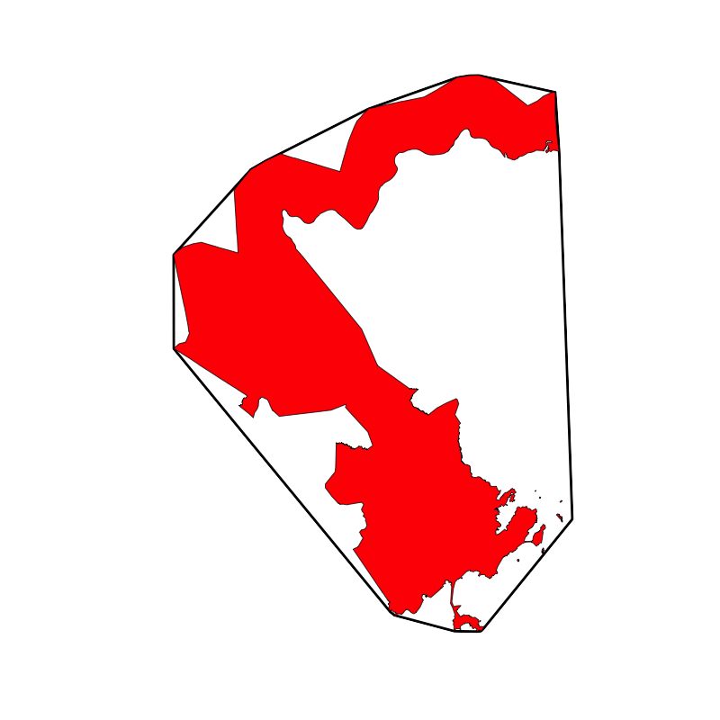
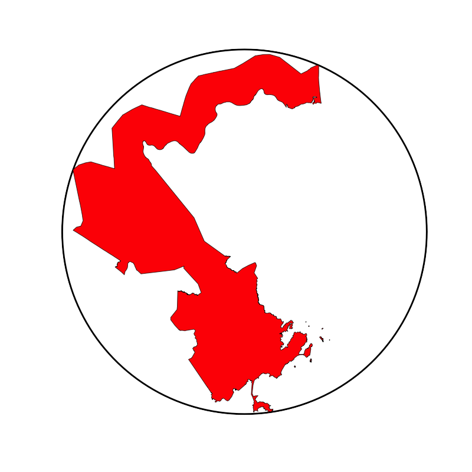
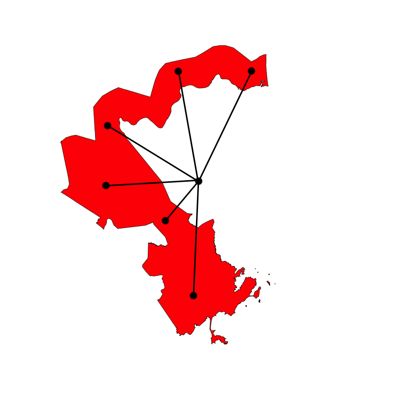
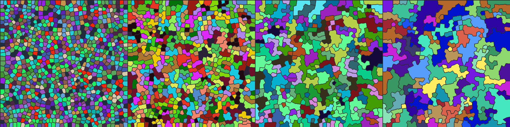

Gerrymandering is difficult for courts to fight becuase there is no agreed upon definition. Properties like compactness and fairness are desired but there are subjective tradeoffs between them and no 'ideal' districting exists. As a result, it is difficult to deffinitively show that a districting could be more fair. Evaluating a districting by comparing it to a set of reasonable alternatives has become a theoretically attractive approach. However, generating a large set of satisfactory districts is a significant technical challence because states may be composed of tens of thousands of geographic units, with trade-offs between many competing objectives.
Antimander is a generative design tool and research project to generate and browse optimized congressional dsitrictings. While districting commitess using it directly is unikely, it could be used as evidence of gerrymandering and also to help inform to public about the tradeoffs and how these trade-offs were made for their districts.
Antimander proposes connecting algorithmic districting to the research field of multi-objective evolutionary algorithms (MOEAs) and novelty search and presents an open source optimization engine and viewer that does so. It is just a first-step and more work and help is needed.
Wisconsin: Real vs Antimander-Optimized
Background
Every decade the US redraws congressional districts, which are divisions of a state each allotted one elected congressional representative. The distribution of elected representatives has significant political impact, motivating political parties to exploit such districting to their advantage, known as gerrymandering. For example, districtings can pack a small number of districts full of the opposing party’s voters to waste many votes, enabling other districts to crack i.e. to be won by a small (but comfortable) amount, thereby securing an outsize proportion of a state’s representatives for the gerrymandering party.
TODO - add more
Previous approaches apply Monte Carlo methods [1], single-objective evolutionary algorithms [4], and non-evolutionary two-objective methods [6] to generate districtings. Antimander is a open source, multi-objective evolutionary that creates optimzied dsitricts for comparison.
Interactive Viewer
Viewing N / K
On the top left is something called a parallel coordinates plot which has one line for every generated solution. Each vertical axis is another dimension we are trying to optimize for.
You can drag (brush) on axis to filter only those. This makes it easy to explore the tradeoffs. For example, you may see only the top percentage of one objective and also how those solutions rank in other objectives.
You may also click on any district to enlarge it.
Each state is divided into eight districts. The color represents what party that district is leaning towards.
Metrics: What makes a good district?
The results above were optimized for "fairness", "compactness" and "competitiveness." But what are those and what do they mean?
Fairness
Generally we want the percent of representatives to correspont to the percent of voters for that party. The efficiency gap [5] is a metric that views fairness through the lens of the lost votes of each party. Votes cast for the losing party, or those cast for the winning party beyond the winning threshold are considered lost.
Competitiveness
Close races helps prevent incumbents from being too entrenched (incumbant gerrymandering). Also, less polarized represetnatives are beneficial for a healthy democracy. Competitiveness is measured by the largest ratio by which one party wins over another.
Compactness
The original gerrymander was named for its peculiar shape it is intuitivly desirable to expect to live near people within a same district. A lot of attention is therefore paid to the shad of districts, especially since - unlike other metrics - it is easy to evaluate visually. But what does it mean to be 'compact'? It turns out there are many metrics that can be used. Images below are from this article which also has additional metrics.
Polspy-Popper
Ratio of area to perimeter (used above).
Convex-Hull
Ratio of area to its convex hull.
Bounding-Circle (Reock)
Ratio of area to its minimum bounding circle. Also knows as "Reock."
Center-Distance
The average distance to the centroid of a district.
Multiple compactness
Viewing N / K
As you can see compactness is complicated. On the left are districts optimized for all of thecompactness metrics above. They still had to be contiguos and equal (same number of people).
We can see which metrics corelate and which dont, or what it means to be compact for one but not the other.
The dark colors mean these districts are not competitive, which is not suprising since that was not included.
Test
Test
Test
Test
Methods
Multi-objective evolutionary algorithms are able to optimize across multiple objectives. The Non-Dominated-Sorting-Genetic-Algorithm (NSGA-II) [cite] is used here which is a common method that find solutions that are 'non-dominated' (there is no other solution better in all objectives). To improve upon NSGA-II (which when applied naively failed to generate any feasible solutions), we explore a series of extensions: multi-phase optimization, novelty search (NS), and feasible-infeasible (FIF) search. Crossover is not employed due to the challenges of combining diverse partitions to generate viable and meaningful new solutions.
Representation & Seeding
Districts are represented as integer arrays, where each node is assigned to a district. Initial individuals are created by taking random seed nodes and iteratively adding adjacent random unassigned nodes until there are no unassigned nodes left. A hill-climbing repair operator mutates the random districts until they meet the equality threshold constraint.
Mutation Operator
The mutation operator simply takes a node bordering another district and swaps the district it belongs to. To make exploring the search space practical, the mutation operator only allows mutations that preserve the contiguity of the district. Calculating graph connectedness after every mutation would be computationally prohibitive. Instead, local adjacency graph for every node is pre-computed. This graph on node N is the subgraph where every node is a neighbor of N. To determine if a node N may be removed from a partition without breaking contiguity, a simple search is done on the graph to see if all members that belong to that district remain connected. A full graph traversal is not needed because of assumptions about the structure of districts (such that one district will never fully enclosed another district) that are preserved by the objectives.
Novelty Search
Novelty search explicitly promotes phenotypic diversity, thereby assisting exploration [ cite ]. Novelty Search requires a behavior characterization that captures important traits in few dimensions. To apply novelty search here, we take inspiration from shape features used to characterize 3D meshes [cite osada2002shape] (cite used in corals.). Here, our BC is the histogram of the distances between the centers of all districts.
Feasible-Infeasible Search
The double constraints of contiguity and equality propose a challenge for the optimization process since the mast majory of the possibilities are inviable. Often, finding a good solution requires explores some bad ones first. Some genetic-algorithms simply throw out invlaid solutions while others keep them in the same population but with a penalty to their fitness. A more elegant solution is to keep two populations of solutions, one for feasible individuals (those that satify all constraints) and one for infeasible (FIF). The feasible optimize for all the objectives while the infeasible optimize to satisfy the objectives. Liapis et all (cite Enhancements to Constrained Novelty Search) propose combining novlety search with FIF.

Derp derp
Multi-Phase
Because optimizing a large number of nodes directly is challenging, districts are optimized through a multi-phase evolutionary algorithm, where each successive phase divides districts more granularly (similarly to Swarmy et al. cite{swamymulti}). To create a series of coarsening graphs, the graph is iteratively contracted using star contraction \cite[ch. 13]{ab-algorithms} until the state has reached 500 nodes (a resolution amenable to direct optimization). An additional bias is added to preserve compact shapes across graph resolutions. The results of optimizing at a more coarse representation serve as a starting point for optimizing the successive (less-coarse) phase.
TODO repalce with a state contracted
Data
Wisconsin is chosen as a test as in [cite{liu2016pear,swamymulti}]. Census and geographic data was downloaded from the Metric Geometry and Gerrymandering Group's mggg-states Github repository. Voters for each party were the average voters in the 2012 and 2016 presidential election. Wisconsin has eight congressional districts composed from 6634 census wards.
Experiments
Three methods were compared: NSGA-II, feasible-infeasible search (FIF), and FIF with novelty as an additional objective in the infeasible population only (FIF-NOV). Each run had a total population of 800, and consisted of 1000 generations per each of its five phases. Each run was replicated five times.
FIF with novelty outperformed vanilla NSGA-2 and FIF without novelty. Somewhat suprisingly, FIF did worse than NSGA if no novelty was employed.
Comparing actual and optimized Wisconsin districts. Shown optimized solutions are hand-chosen from those that dominate the actual districting (i.e. strictly lower score on all measures) (a) Wisconsin's 2011 districts have scores: fairness=0.788, competitiveness=%53.16, equality=%8.46. (b) An optimized compact district from a FIF-NOV run: fairness=0.647, competitiveness=%17.98, equality=%0.76. The solution is quantatively and qualitatively more compact than the actual districting. (c) An optimized district with maximum fairness and competitiveness from a FIF-NOV run: fairness=0.762, competitiveness=%13.12, equality=%0.0 Remarkably this districting had exactly 726419 lost votes for each party.
Conclusion & Next-Steps
Despite gerrymandering remaining a challenge, there is promise that algorithmic developments may offer relief. Towards that end, we have demonstrated a method and open-source tool that optimizes districts across several objectives using multi-objective evolution. Our study in Wisconsin demonstrates the capacity to produce districts that are more equal, competitive, and compact than the current real-world districts. However, for tools like this to be successful they must incorporate many further measures, including majority-minority districts, preserving areas of interest, and other metrics that vary in importance by state. We suggest the districting problem as a potential MOEA benchmark for both technical reasons and because of its timely need for the 2021 redistricting.
Stay up to date with Antimander
References
TODO